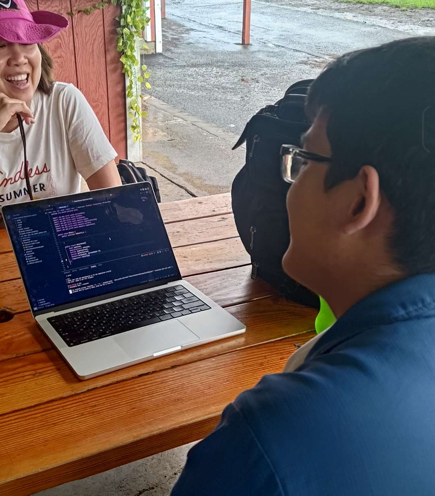

我是游子軒，一個網頁工程師、創新者。從小學看YouTube影片開始，我對於電腦硬體開始產生強烈興趣。到了國中，我有自己的電腦後，透過Minecraft第一次踏入程式設計領域。在之後接觸了Python、C/C++跟Flask，開始了我的開發者之旅。
到了高中，我加入了學校的FRC機器人社團，開始接觸到Java與更大結構的程式設計，在寒假的時候也有參加Google所舉辦的DevFest 2026活動。在這些經歷中，我逐漸學習與成長，變成現在這個樣貌。
FRC(FIRST Robotics Competition)機器人競賽是由非營利組織FIRST所舉辦針對高中生的國際性的機器人賽事，透過每年設計不一樣的題目激發學生創新與解決問題的能力。
在2026賽季Rebuilt(發掘重建)中，團隊要在一個半月內設計一台周長110英寸，高30英寸，重54公斤以內的機器人，在場地中蒐集遊戲道具「燃料」(Fuel)並投入到「樞紐」(Hub)的射擊目標。在有限且分割的時間內，場地上六台機器以三台為一個聯盟，在場地中奔馳，爭奪勝利的資格。
在FRC機器人競賽的賽制中，團隊可以參加地區賽(Regional)，獲得聯盟勝利或是週積分達到水準，可以獲得在休士頓的世界總決賽與各國好手比拼。
「讓科技走入生活」是程式貓的核心理念，透過專案導向的運營方式，成員可以有更多成長跟學習的空間，並且能夠在不同專案中學習到更多元的技能。 你可以根據自身的興趣為不同的項目做出貢獻。
在 FRC 機器人競賽中，物件辨識是實現高效自動化的核心功能。它賦予了機器人自主感知的「雙眼」，使其能在瞬息萬變的戰局中，精準鎖定並追蹤遊戲道具的定位。
這項技術在2025年的比賽題目 REEFSCAPE 的情境下顯得尤為關鍵。面對複雜的場地障礙與高密度的取物需求，單靠操控手的手動操作，往往會因視線死角而降低效率。透過電腦視覺與深度學習模型的導入，機器人不僅能在相對不受限的視角下快速辨認出道具，還能結合里程計進行路徑自動修正。這不僅極大化了自動化階段的得分潛力，更讓操作手在手動時間更輕鬆，將大部分的流程都自動化，也比較不容易出現致命性的錯誤。
email: me@justmore5mins.com
傳郵件給我